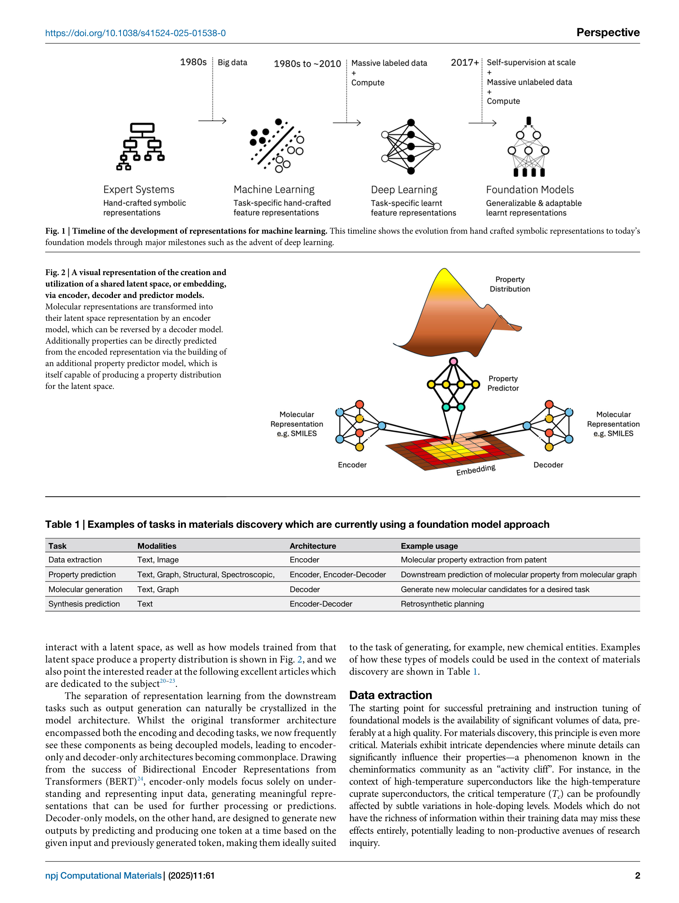
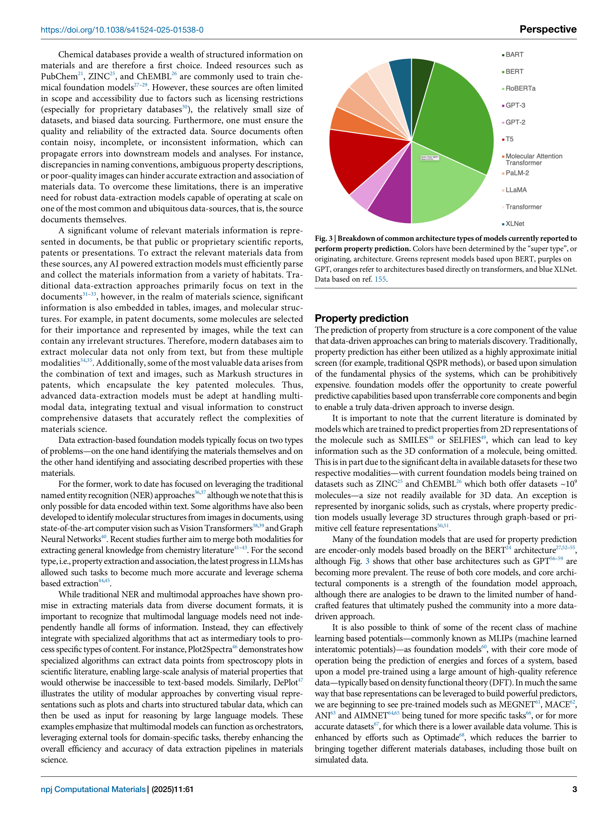

Figure 1
Figure 1
Foundation model(LLM을 포함하는 대규모 사전학습 모델의 총칭)이 재료 발견(materials discovery) 분야에 어떻게 적용되고 있는지를 조망하는 perspective 논문이다. 데이터 추출, 물성 예측, 분자 생성, 합성 계획의 네 가지 핵심 과제에서의 현황을 리뷰하고, 향후 멀티모달 모델, 새로운 데이터 캡처 방식, 멀티피델리티(multi-fidelity) 접근법이 이 분야의 방향을 결정할 것이라 전망한다.

Figure 2

Figure 3
이 논문은 실험/모델 개발이 아닌 perspective(전망) 논문으로, 방법론 섹션 대신 현황 리뷰와 미래 전망을 제시한다.
IBM Research 팀이 작성한 이 perspective는 foundation model의 재료 발견 응용을 10페이지의 간결한 분량에 잘 정리한 유용한 개관이다. 특히 데이터 추출부터 합성까지의 전 파이프라인을 foundation model 관점에서 일관되게 조망한 점, MLIP를 foundation model 프레임워크에 포함시킨 점, 멀티피델리티 모델의 중요성을 강조한 점이 차별화된다. 다만 IBM의 자체 연구(Molecular Transformer, GT4SD, Text-chem T5 등)에 대한 인용이 비중 있게 다뤄져 있어 다소 자기 참조적인 면이 있고, 최신 LLM(GPT-4, Claude 등)의 in-context learning이나 에이전트(agent) 기반 접근에 대한 논의가 상대적으로 얕다. 재료과학에서 AI를 활용하려는 연구자에게 분야 전체의 지형을 파악하는 입문 자료로 적합하다.